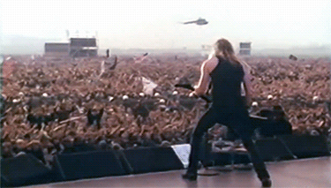

Welcome to my Metal Homepage
My favorite genres of music are rock and metal;
And their subgenres: hard
rock, heavy metal, thrash metal, power metal and death
metal.
Here you will find out a little about my favorite metal bands.
